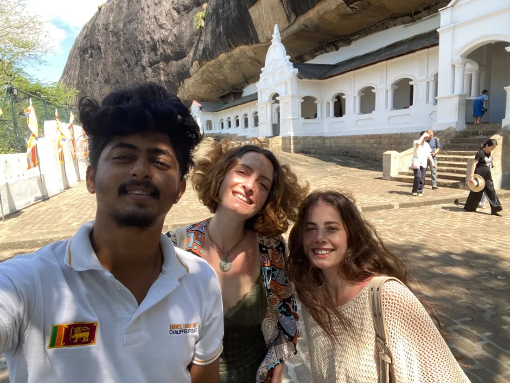
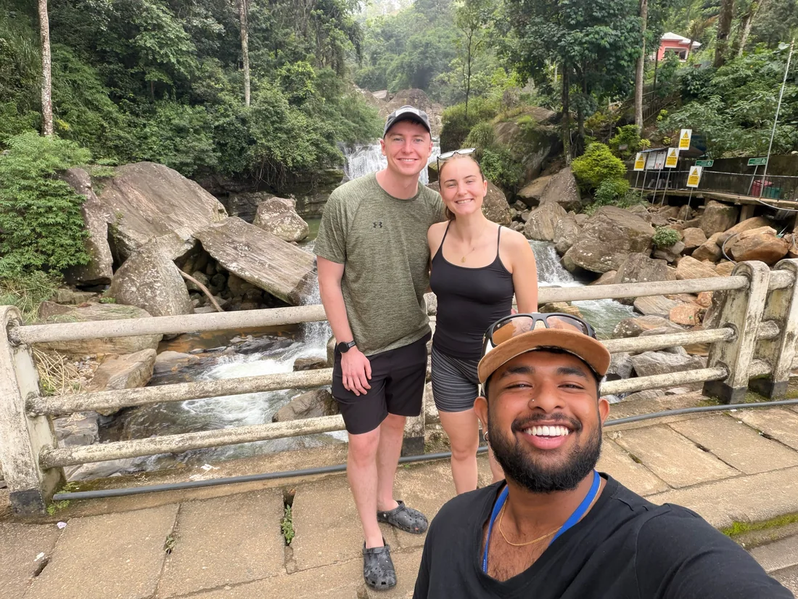

Day trip
Day trip
Kandy City Tour
A day of sacred sites, gardens and viewpoints around Sri Lanka’s hill capital.
View itinerary
Compare private Sri Lanka tours by duration and travel style, from a day in Kandy to a two-week island circuit.
Browse the tours
Day trip
A day of sacred sites, gardens and viewpoints around Sri Lanka’s hill capital.
View itinerary
Day tripA day trip from Kandy combining Pinnawala with craft and tea stops.
View itinerary Day trip
Day trip
Head up to the tea estates and waterfalls of Sri Lanka’s cooler highlands.
View itinerary
Day tripBuild an outdoor day around white-water rafting in Kitulgala.
View itinerary
Day trip
A full day of railway landmarks, hikes and waterfalls in the hills around Ella.
View itinerary Day trip
Day trip
Combine the rock fortress and Dambulla’s painted caves on a private day trip.
View itinerary 4 days · 3 nights
4 days · 3 nights
A short circuit through the Cultural Triangle, Kandy and the hill country.
View itinerary
5 days · 4 nights
Pair the Cultural Triangle and Ella with a safari and a stop on the south coast.
View itinerary 6 days · 5 nights
6 days · 5 nights
Cultural Triangle landmarks, a scenic train ride, wildlife and three distinct stretches of the island.
View itinerary
7 days · 6 nights
An island circuit from the ancient cities to Ella, Yala and the southern beaches.
View itinerary
8 days · 7 nights
Explore ancient cities, climb Sigiriya and make time for tea country, wildlife and the south coast.
View itinerary
10 days · 9 nights
Travel from ancient capitals through the highlands to Yala and the south coast.
View itinerary
12 days · 11 nights
A longer circuit with room for Anuradhapura, the Knuckles Range and a full day in Yala.
View itinerary 13 days · 12 nights
13 days · 12 nights
Go north to Jaffna before circling back through the Cultural Triangle, the hill country and southern coast.
View itinerary
14 days · 13 nights
Two weeks linking Jaffna, Wilpattu, ancient cities, Ella and the south coast.
View itinerary 15 days · 14 nights
15 days · 14 nights
A longer north-to-south journey with additional time for wildlife and the tea country.
View itinerary 5 days · 4 nights
5 days · 4 nights
Visit sites associated with the Ramayana tradition on a compact sacred circuit.
View itinerary
7 days · 6 nights
Follow sacred sites from Colombo and Chilaw to Trincomalee, the hills and the south.
View itinerary 8 days · 7 nights
8 days · 7 nights
A temple journey through the northwest, Trincomalee, Kandy and the southern coast.
View itinerary 11 days · 10 nights
11 days · 10 nights
A wider sacred circuit that includes the Tamil north and Trincomalee.
View itinerary
14 days · 13 nights
The longest Ramayana itinerary in the original catalogue, with time in Jaffna and Trincomalee.
View itinerary
5 days · 4 nights
Base a short east-coast break around Trincomalee, Nilaveli and Pasikudah.
View itinerary
7 days · 6 nights
Combine Trincomalee and Pasikudah with Batticaloa and Arugam Bay.
View itinerary
10 days · 9 nights
Combine the Cultural Triangle with a coastal journey from Trincomalee to Arugam Bay.
View itinerary
14 days · 13 nights
Follow the east coast from Trincomalee to Arugam Bay, then return via Yala and Galle.
View itineraryTell us how long you have and what you’d like to see.